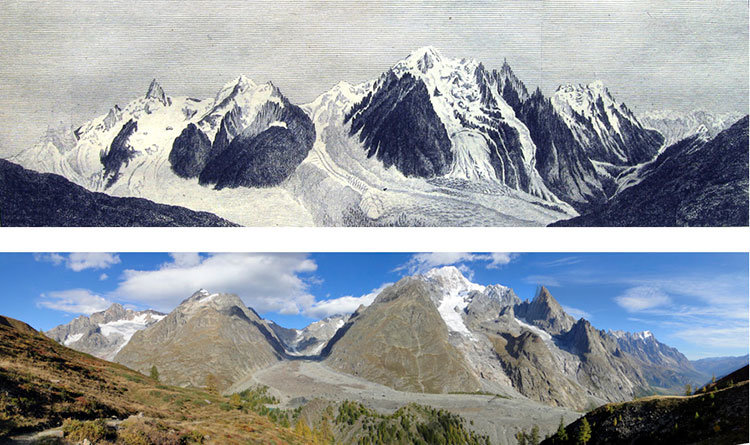

Snowshoe Hare |

Climate change refers to long-term shifts in temperatures and weather patterns, primarily driven by human activities like burning fossil fuels. These actions release greenhouse gases that trap the sun's heat, causing global temperatures to rise and triggering widespread environmental disruptions.
Snowshoe Hare |
|||
| Snowshoe hares are reported to scavenge for meat in the winter. This behavior may occur in the hare and other herbivores as a response to limited preferred food sources or an overabundance of carrion. Use of carrion as food has also been reported in beavers and the eastern cottontail (Sylvilagus floridanus). | -Size & Weight: Measures about 16–20 inches long and typically weighs between 3 to 4 pounds. Females are usually slightly larger than males.
-Distinctive Feet: Their namesake "snowshoes" are large, broad hind feet equipped with dense, stiff hairs on the soles. This acts as a natural snowshoe, preventing them from sinking into deep powder. -Color-Changing Coat: They shed their fur twice a year based on day-length.Summer: Fur turns a rusty or grizzled grayish-brown with a white belly, blending perfectly with forest dirt and brush.Winter: Fur transforms to a brilliant, camouflage white, though their eyelids and ear tips remain black. |
||